1. Qué es el portal
SDGs for everyone (nombre corto: SDG) explica los 17 Objetivos de Desarrollo Sostenible (ODS) de la Agenda 2030 en lenguaje simple, en castellano, guaraní e inglés, con herramientas de accesibilidad que cada persona activa según su necesidad, un buscador de objetivos, una trivia y una zona de juegos. Es el canal formal de divulgación de los ODS del Workshop Ingeniería 360°.
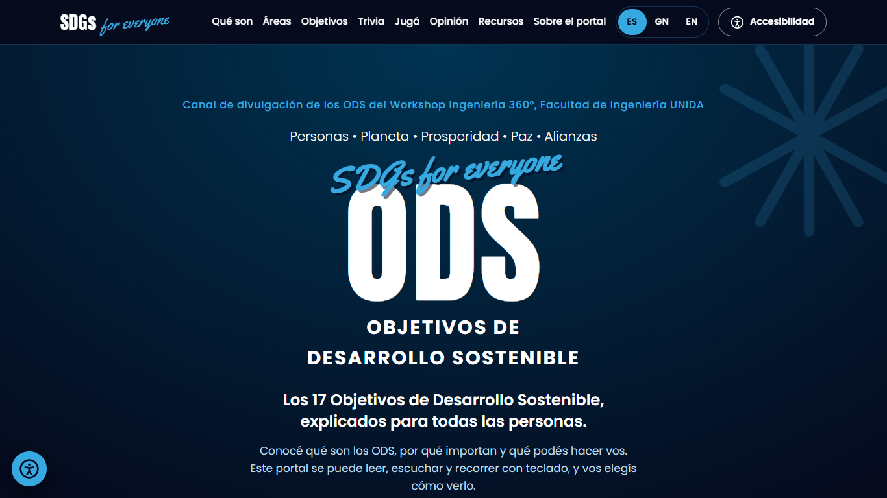
Inicio del portal en castellano.
2. Cómo abrirlo
- Abrí el enlace groupunida.github.io/ods-portal en Chrome, Edge, Safari o Firefox, o escaneá el código QR con la cámara del celular.
- También funciona abriendo el archivo
index.htmldirectamente, sin internet (las tipografías pasan a ser las del dispositivo). - No hace falta crear cuenta ni instalar nada. Las preferencias se guardan en tu navegador.
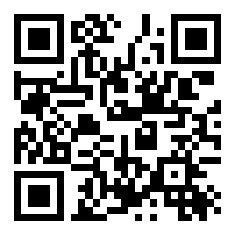
Código QR de acceso.
3. Idiomas
Arriba a la derecha están los botones ES (castellano), GN (guaraní) y EN (inglés). Todo el contenido cambia de idioma y la elección se recuerda. También podés abrir el portal con el idioma en el enlace: ?idioma=gn.
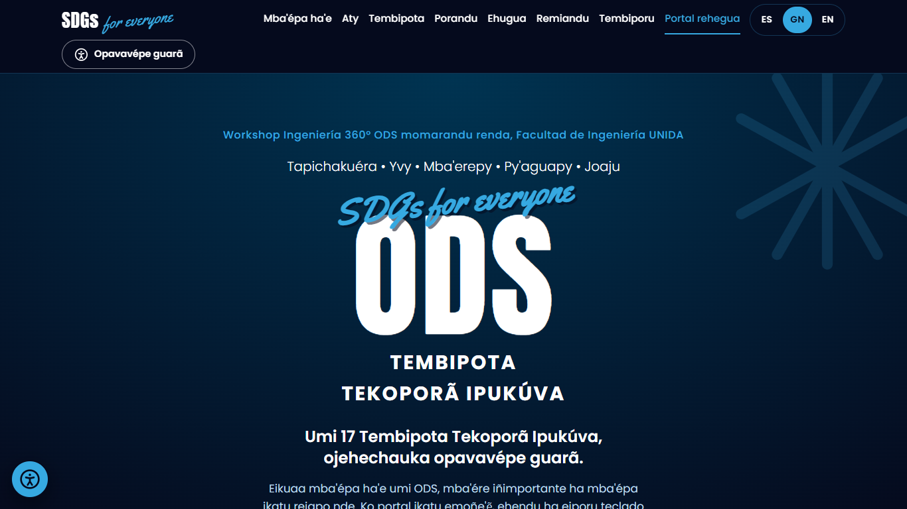
En guaraní: “ODS – Tembipota Tekoporã Ipukúva”.
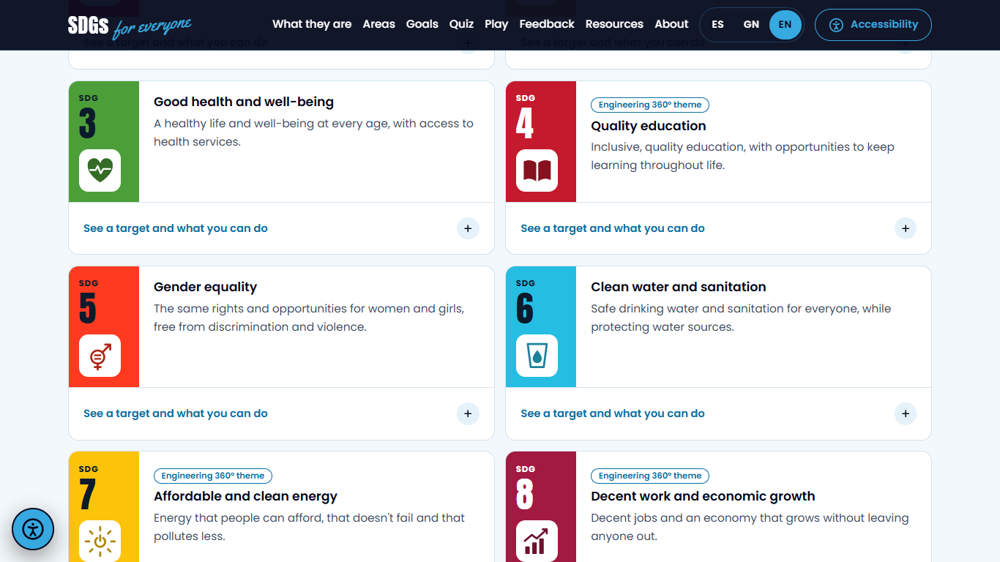
En inglés: “SDGs – Sustainable Development Goals”.
4. Acceso rápido y canal formal
La sección Recursos (menú superior) reúne tres formas de llegar a la información:
- Buscá un objetivo: escribí una palabra (agua, trabajo, clima, escuela…). Aparecen los objetivos relacionados con su número y color; al elegir uno se abre su ficha.
- Compartí el portal: código QR, botón Copiar enlace y Enviar por WhatsApp. También podés descargar la Guía rápida (PDF) con los 17 ODS y abrir este manual.
- Canal oficial del Workshop: enlace a Ingeniería 360° en unida.edu.py y acceso directo a los ejes del Workshop (filtra las fichas que son ejes del evento).
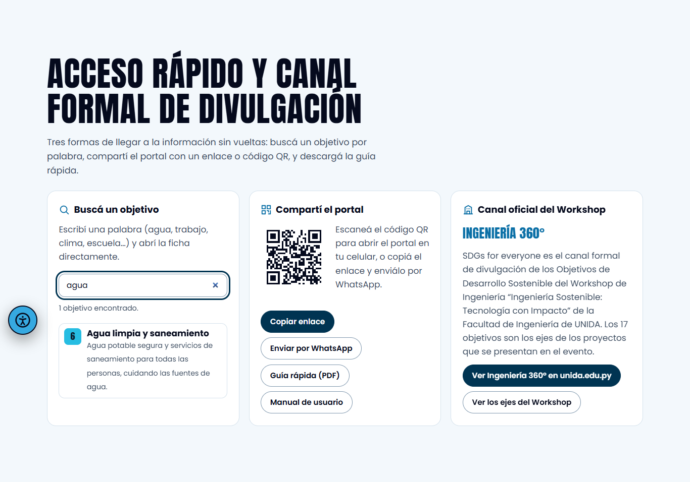
Acceso rápido: resultado del buscador para “agua”, QR y enlaces, y canal del Workshop.
5. Accesibilidad
- Pulsá el botón redondo de accesibilidad (abajo a la izquierda), el botón Accesibilidad del menú o el atajo Alt + A.
- Elegí un perfil rápido: Baja visión, Dislexia, Concentración o Leer y escuchar. Cada perfil combina varios ajustes con un toque.
- O ajustá cada opción: tamaño del texto (hasta 200 %), tipografía hiperlegible, espaciado, alineación, tema (original, claro, oscuro), colores (protanopía, deuteranopía, tritanopía, alto contraste), Lectura Fácil, leer al tocar, voz más lenta, máscara de lectura, enlaces resaltados, cursor grande y menos movimiento.
- Restablecer ajustes vuelve a la configuración inicial.
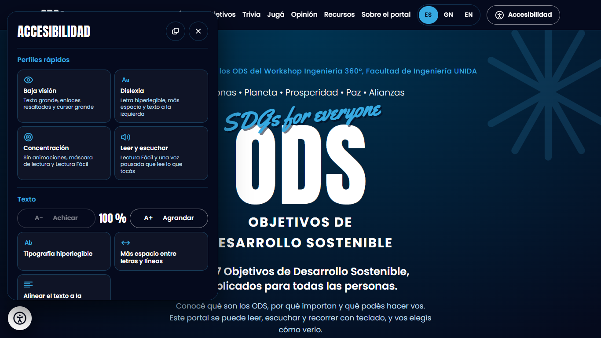
Panel de accesibilidad.
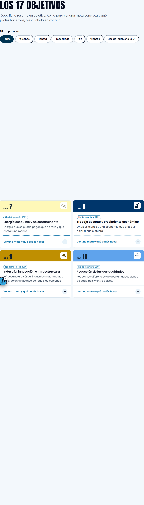
Paleta para deuteranopía en las fichas.
6. Explorar los ODS
Qué son explica la Agenda 2030 y define las palabras clave. Áreas agrupa los objetivos en personas, planeta, prosperidad, paz y alianzas. En Objetivos cada ficha muestra el ícono, el resumen y la versión “En palabras simples”; al abrir Ver una meta y qué podés hacer aparece una meta concreta y una acción cotidiana, con botón para escucharla. Los filtros permiten ver por área o solo los Ejes de Ingeniería 360°.
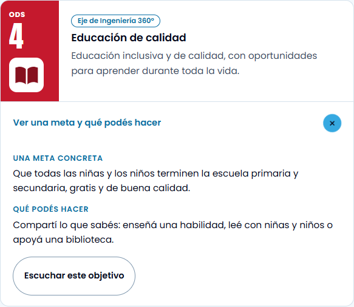
Ficha del ODS 4 desplegada.
7. Trivia y juegos
Trivia: 10 preguntas, una por vez, con explicación inmediata y paso automático (se puede desactivar). El ranking ordena por aciertos y tiempo. Jugá: Memotest (6 u 8 parejas), Adiviná el ODS (10 rondas con reloj desactivable), Ruleta con desafíos y Muro de compromisos. Se juegan con el dedo, el mouse o el teclado y los sonidos pueden apagarse.
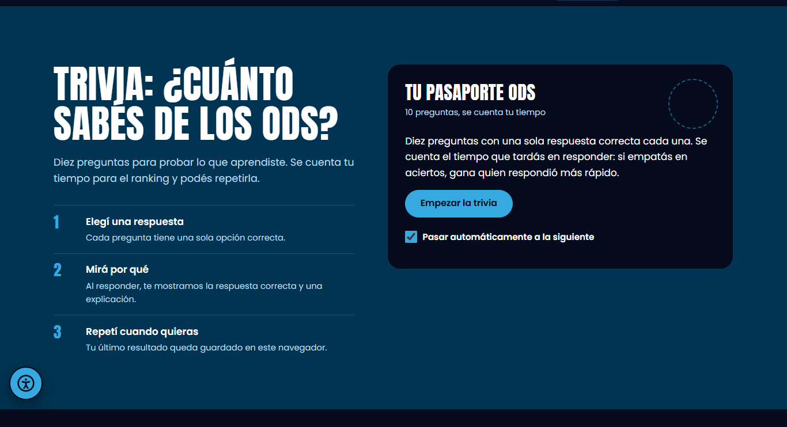
Trivia.
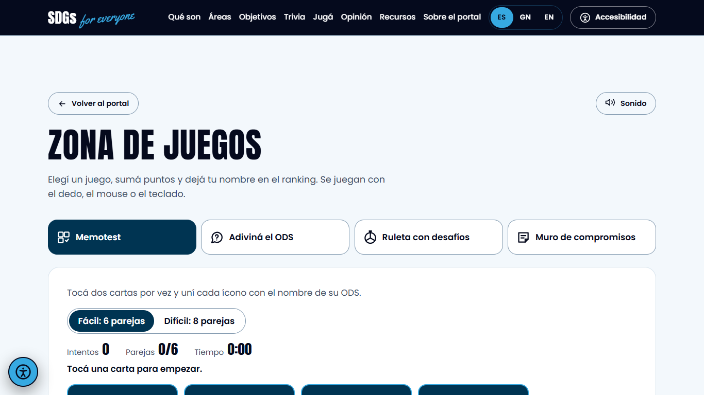
Zona de juegos: Memotest.
8. Opinión
El formulario Opinión es anónimo: facilidad de uso (1 a 5), opciones de accesibilidad utilizadas y un comentario. Las respuestas quedan en el dispositivo. El equipo puede ver el recuento y descargar un CSV desde el panel del equipo.
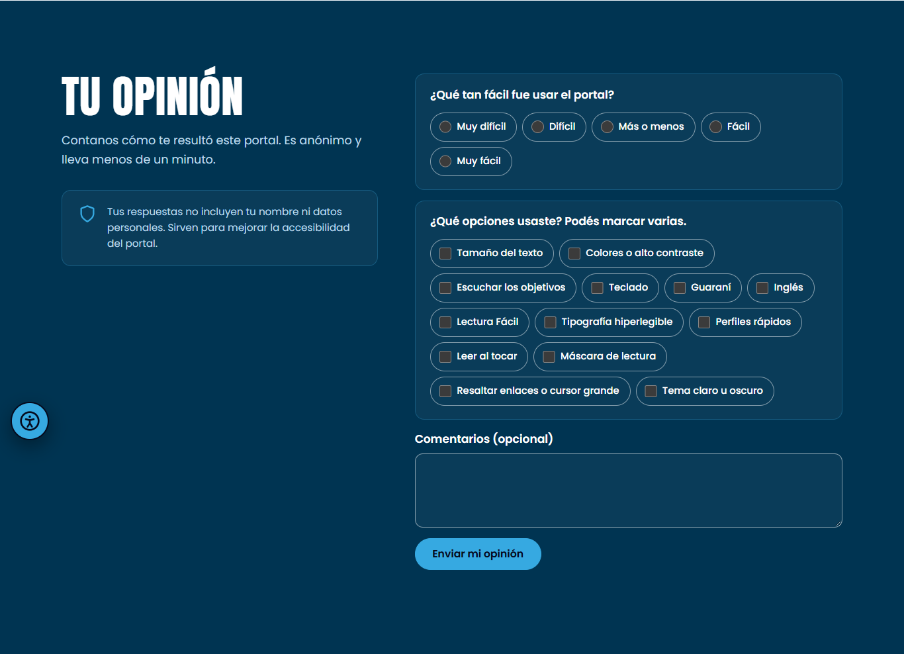
9. Modo pantalla (expo)
- En el pie del portal pulsá Modo pantalla (expo): el portal pasa a pantalla completa con botones más grandes.
- Si nadie usa la pantalla durante un rato, pregunta “¿Seguís ahí?” y se reinicia para la próxima persona.
- Para salir, pulsá Salir del modo pantalla o Esc.
10. Atajos de teclado
| Tecla | Acción |
|---|---|
| Tab / Shift+Tab | Avanzar o retroceder entre enlaces, botones y fichas |
| Enter / Espacio | Activar el elemento con foco |
| Alt + A | Abrir o cerrar el panel de accesibilidad |
| Esc | Cerrar el panel o el menú |
| Flechas | Moverse en la trivia, los juegos y las pestañas |
11. Preguntas frecuentes
Abrí el archivo desde WhatsApp y no funciona. La vista previa no ejecuta JavaScript: tocá “Abrir con” y elegí Chrome, Safari o Edge.
No se escucha la voz. Subí el volumen y verificá que el dispositivo tenga voces instaladas (Ajustes → Accesibilidad → Texto a voz).
Se perdieron mis ajustes. Se guardan en el navegador; si borrás los datos del sitio o usás modo incógnito, vuelven a los valores iniciales.
El buscador no encuentra nada. Escribí al menos 2 letras y probá con otra palabra; busca en el idioma activo.
12. Créditos
- Producto
- SDGs for everyone (SDG), portal web accesible y trilingüe para la divulgación de los Objetivos de Desarrollo Sostenible
- Canal
- Canal formal de divulgación de los ODS del Workshop Ingeniería 360°
- Equipo
- Ruth Elizabeth Nuñez Cabrera (líder)
- Alejandro Matías Martínez Ortiz
- Sergio Alexis Sanabria Toledo
- Mauricio Antonio González Benítez
- Ismael David Hermosilla Reyes
- Docente responsable
- Ing. Gessica Paola Pérez Candado
- Asignatura
- Programación para Internet, Ingeniería Informática
- Institución
- Universidad de la Integración de las Américas (UNIDA), Facultad de Ingeniería
- Fuente de los contenidos
- Agenda 2030 de las Naciones Unidas. Portal educativo no oficial.
- Versión del manual
- 1.0, noviembre de 2026